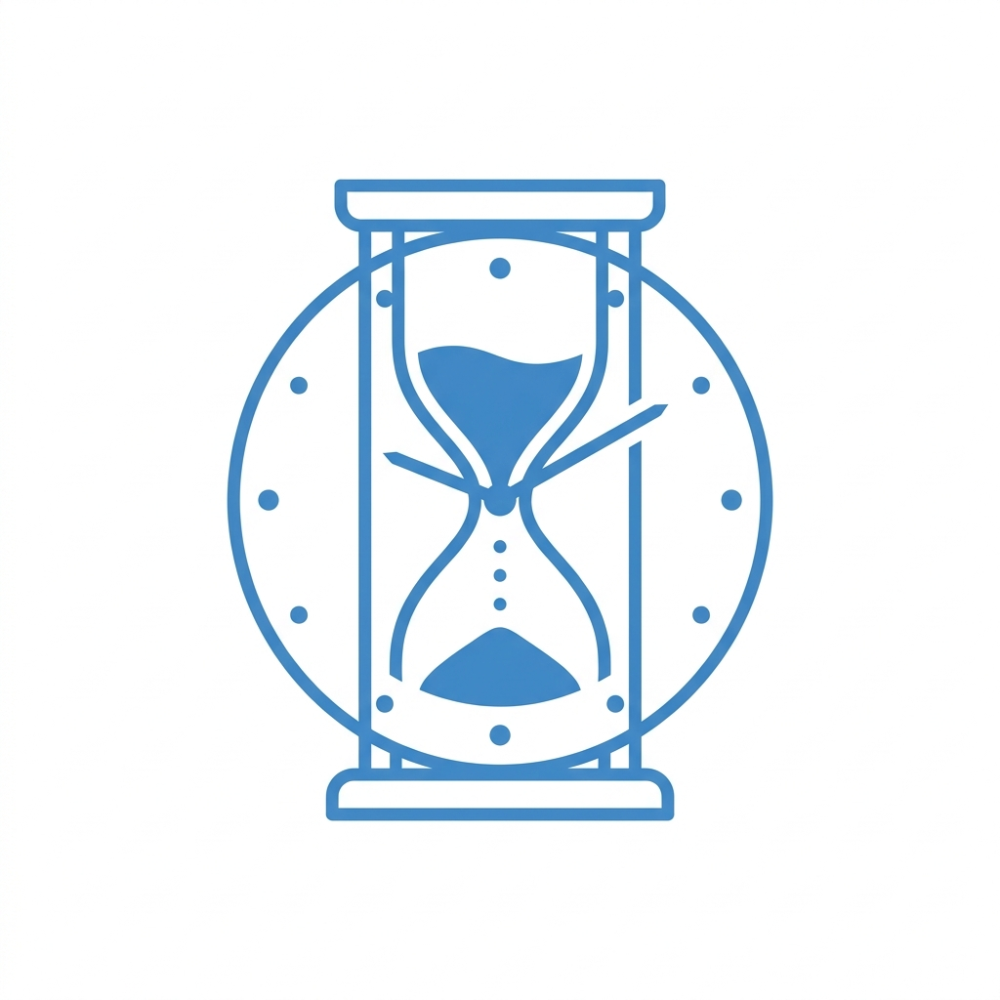
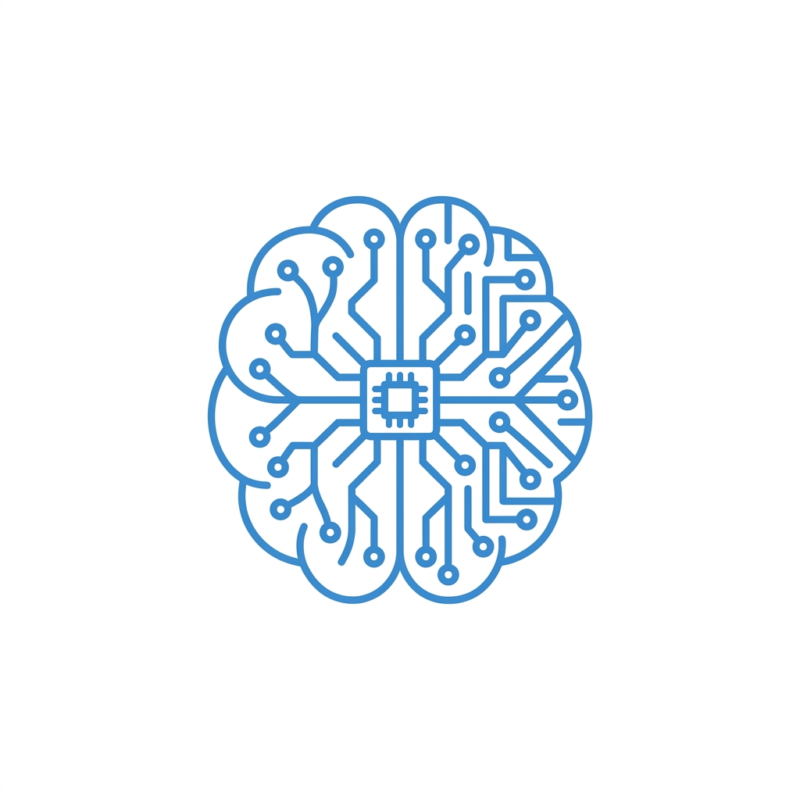
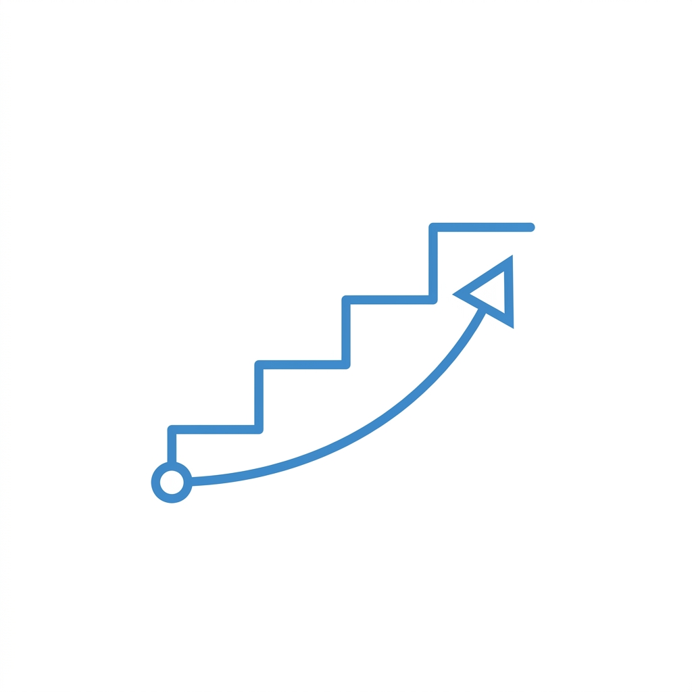

副業への一歩を踏み出せずにいるのは、あなただけじゃありません。多くの会社員が同じ壁にぶつかっています。
物価は上がり続けているのに、給料はほとんど変わらない。
「副業しなきゃ」と思いながら、また今月も何もできなかった——。
その焦りを感じているうちは、まだいい。
本当に怖いのは、「もう遅いかも」と諦めてしまうことです。
AIが普及するいま、スキルがある人とない人の
収入格差は、これから急速に広がっていきます。
動き出すなら、今が最後のチャンスかもしれません。
難しいスキルも、まとまった時間も、実績も——最初はなくて大丈夫です。
AIをうまく使えば、会社員のまま着実に収益を積み上げられます。

隙間時間を活用して始められます。忙しい会社員でも、
毎日少しずつ積み上げることで着実に収益につながります。

デザインの知識がゼロでも大丈夫。AIツールが補助してくれるから、
センスよりも「やり方」を学ぶことが大事です。

会社を辞めずに副業で実績を積める。安定収入を守りながら、
フリーランスへの道を着実に準備できます。
Aさん（35歳・会社員）
製造業・営業職
「最初はAIって難しそうで敬遠していましたが、相談会で具体的な手順を教えてもらって、思い切って始めました。今では毎月安定して稼げるようになり、転職への不安がなくなりました。」
Bさん（42歳・会社員）
IT系・管理職
「子どもの教育費が心配で副業を探していました。WEBデザインは全くの未経験でしたが、AIのおかげでポートフォリオがすぐ作れて、2ヶ月で最初のクライアントを獲得できました。」
Cさん（38歳・会社員）
小売業・店長
「仕事が忙しくて時間がないのが一番の悩みでした。にっしーさんに1日1時間でできるやり方を教わって、今は帰宅後の隙間時間だけで月8万円を稼いでいます。」
「何から始めればいいか分からない」を、この1回で解決します。あなたの状況に合わせた具体的な行動プランをお伝えします。
Limited Offer
質の高いサポートをお届けするため、
今月の無料相談は先着10名のみとさせていただきます。
＼ 今月末（5月31日）までの限定受付 ／
「本当に自分にできるのかな…」という不安、よく分かります。
だから最初は、プレッシャーなしにお話だけ聞かせてください。
相談したからといって、無理に進める必要はまったくありません。
完全無料・勧誘なし・オンライン対応可